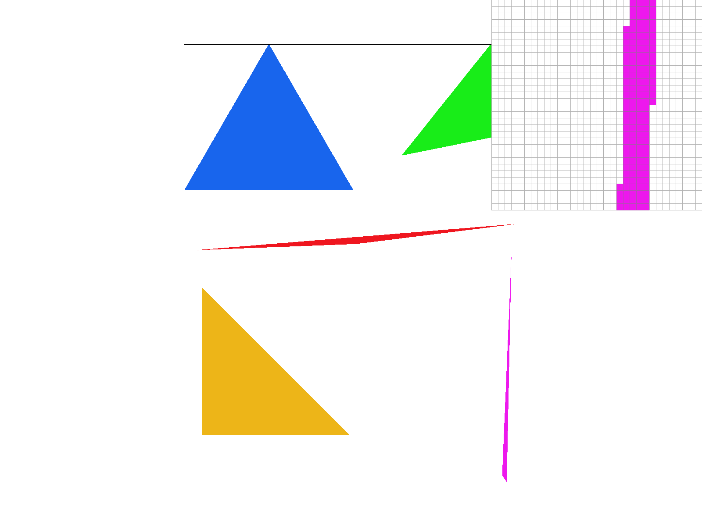
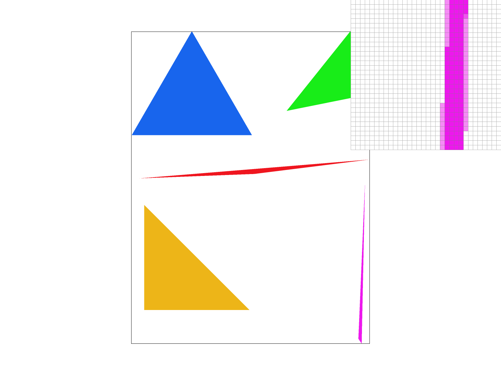
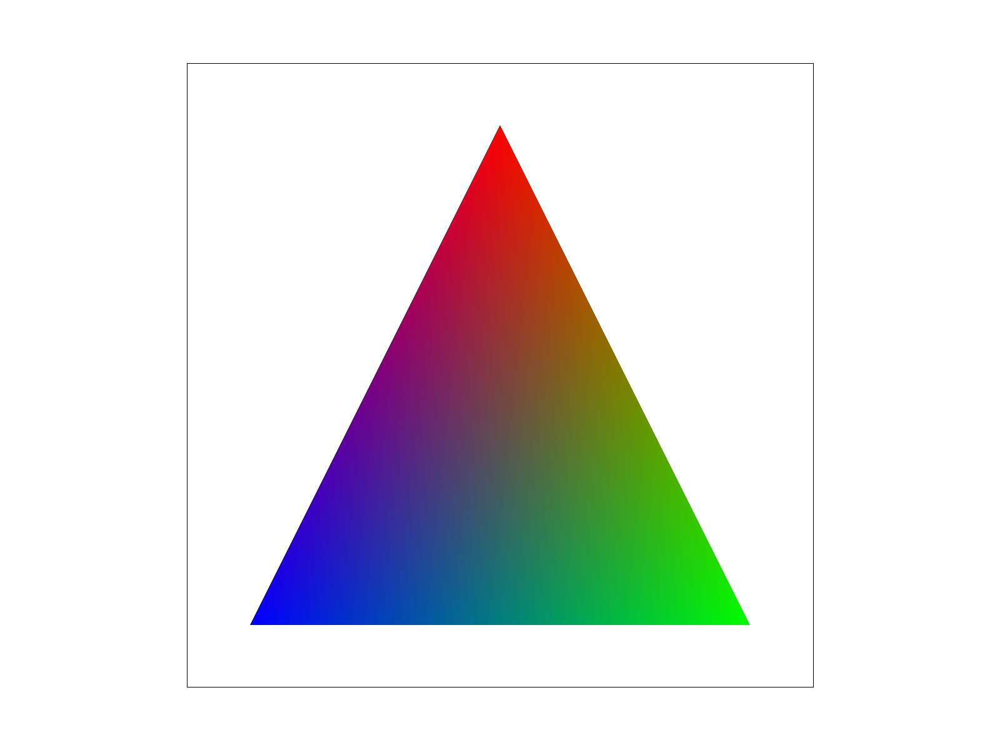
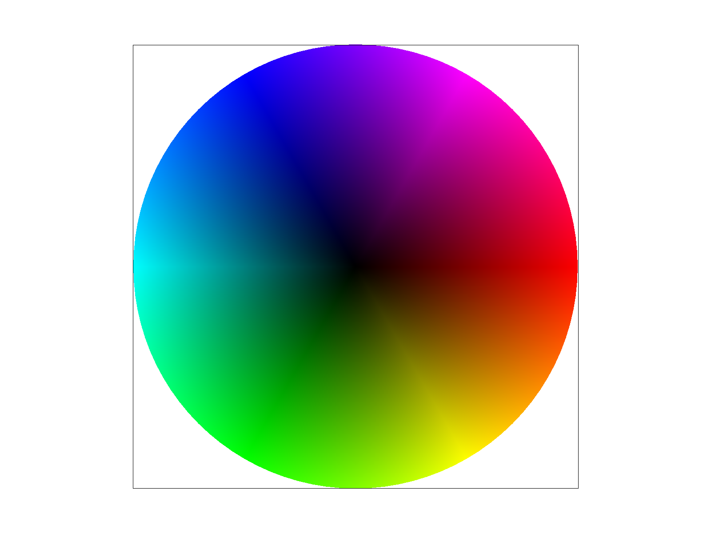
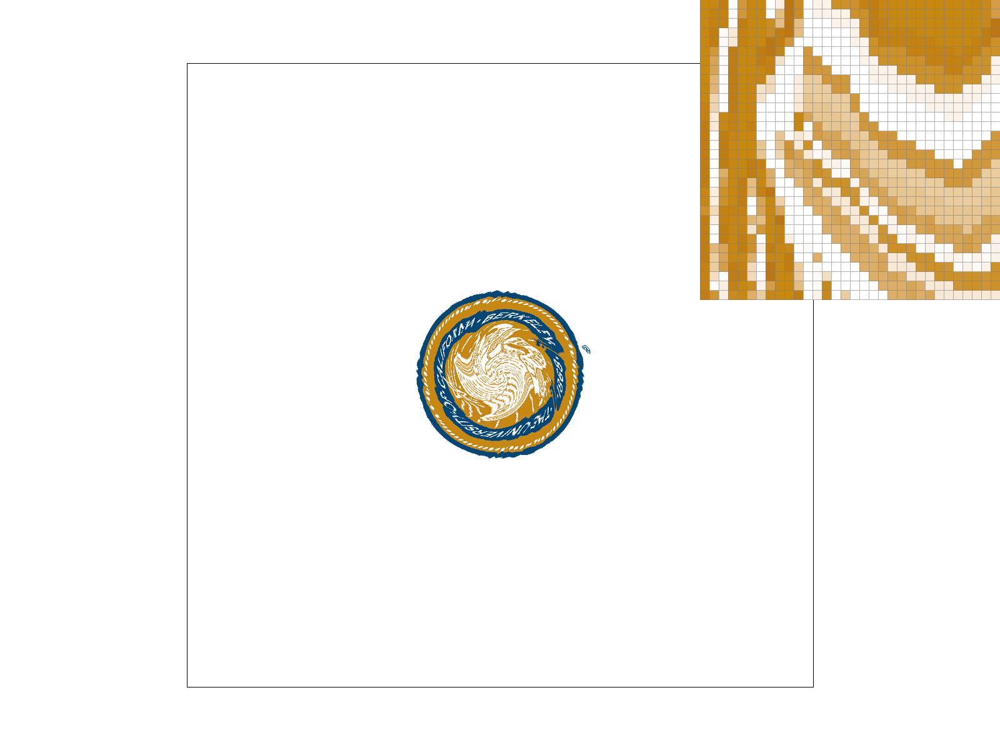
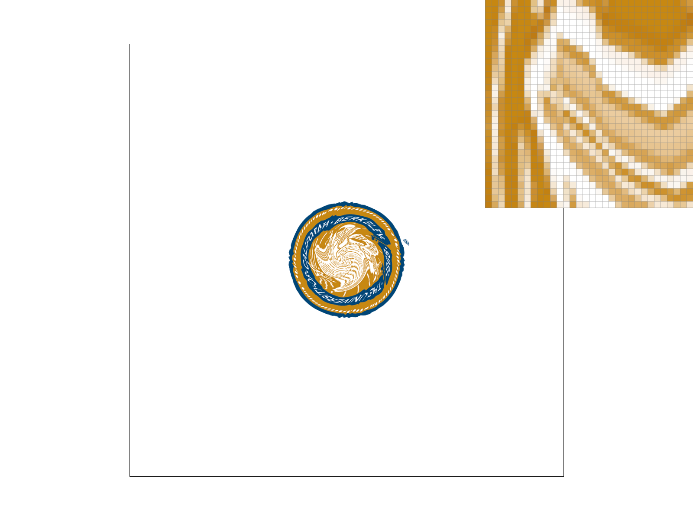
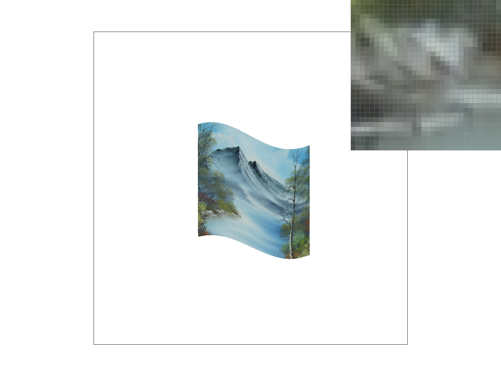

CS184/284A Spring 2025 Homework 1 Write-Up
Link to webpage: https://cal-cs184-student.github.io/hw-webpages-amuthepotato/hw1/index.html
Link to GitHub repository: https://github.com/cal-cs184-student/hw-webpages-amuthepotato
Overview
In this project, we implemented a lot of different graphics processes, including triangle rasterization, supersampling for antialiasing, transformations, and texture mapping with filtering techniques to reduce aliasing artifacts. Our program takes in an image and then converts it into pixels for display on a screen. Since triangles are the foundation for a lot of modern graphics, we implemented algoritmhs to determine whether a sample point was inside a triangle and then interpolated values such as color or texture coordinates across the surface. Supersampling was used to improve image quality so that a lot of jagged edges would appear smoother. Transformations were another key feature. By using transformation matrices, objects could now be scaled, translated, and rotated to become new images. Texture mapping was used to extend the renderer beyond flat colors. We used interpolation of texture coordinates and experimented with pixel sampling methods and level sampling techniques to reduce aliasing. Overall, this assignment brought together concepts from linear algebra and computer graphics into a cohesive system. One of the most interesting takeaways was realizing how many subtle details are required to make rendering look “correct.” Features that seem simple, like smooth edges or textures, require careful mathematical reasoning and algorithm design. Implementing the pipeline from scratch gave us a much deeper appreciation for these complexities are abstracted while performing the same core operations at a massive scale.Task 1: Drawing Single-Color Triangles
Triangle rasterization is the process of converting a triangle defined in 2D space into a set of discrete pixels on a screen. It determines which pixels in the framebuffer should be colored in to visually represent that triangle. To rasterize the triangle, we first ensured that the vertices are consistently ordered (counterclockwise) by computing the signed area using a cross product and swapping the two vertices if the orientation was clockwise (if the area was less than 0). Then, to compute the bounding box of the triangle (the smallest rectangle that fully contains the triangle), we took the minimum and maximum x and y values of the three vertices and used floor and ceil to make sure no pixels were cut off. Then, for each pixel in the bounding box, we iterated over every pixel with a double for loop and used an edge function to test if the pixel was on the correct side of the edge of the triangle (inside or not). If it passed all the three edge tests, that means it's inside the triangle and then we can write color to the corresponding position in the sample buffer. Our algorithm is no worse than one that checks each sample within the bounding box of the triangle because it does exactly that. We restricted all the work to be inside the bounding box and performed a constant amount of computation per sample.
Task 2: Antialiasing by Supersampling
When rasterizing geometric objects, such as triangles, the resolution of the grid is not always sufficient for fine details. This limitation causes aliasing, as discussed in lecture, as seen in the jagged edges above from Task 1. Supersampling is an antialiasing technique that takes multiple subsamples within each pixel instead of just sampling the pixel center. The final pixel color is an average of each subpixel colors. This approach creates smoother edges, especially at sharp corners or thin edges, as seen in the images below.
In our rasterizer, each pixel has multiple subpixel samples stored in sample_buffer, with the number of samples determined by the sample_rate. For triangles, I loop over each pixel in the triangle’s bounding box and check each subpixel for coverage using a line test. Subpixels that are inside the triangle are assigned the triangle’s color, and later the pixel’s final color is computed by averaging all subpixel samples inside it. This averaging step is done inside resolve_to_framebuffer. To avoide averaging out points and lines, I filled all subpixels with the same color in fill_pixel.
The effect of supersampling can be seen below. Partially covered pixels contribute proportionally to the final color, which eliminates the jagged edges that appear at low sample rates. The effect is very noticeable at small angles or the tips of narrow triangles, where aliasing is most pronounced. By averaging multiple subpixel samples, the rasterizer effectively simulates a higher resolution image before downsampling to the display resolution. At a sample rate of 1, aliasing is visible and jagged edges are seen at the narrow tip of the triangle. However, at a sample rate of 16, the triangle edges appear more smooth because the high number of subpixel samples captures finer details and blends the colors more.
|

|

|
|
Task 3: Transforms
Task 4: Barycentric coordinates
I like to think of barycentric coordinates in the linear algebra interpretation. Barycentric coordinates treat a triangle’s vertices as a basis and express any point inside a triangle as a linear combination of the vertices. Each point has three coefficients, alpha, beta, and gamma, corresponding to the weight of each basis vertex. This is seen in the image below.
Barycentric coordinates are used for linear interpolation In our rasterizer, I used barycentric coordinates to interpolate colors. For a triangle with vertices colored red, blue, and green, the color at any point inside the triangle can be calculated as alpha c0 + beta c1 + gamma c2, where c0, c1, and c2 are the vertex colors. This example is seen below, as well as a screenshot of basic/test7.svg.
|

|

|
Task 5: "Pixel sampling" for texture mapping
Pixel sampling is the process of determining what color a screen pixel should receive from a texture when performing texture mapping. Because textures are stored as discrete grids of texels but texture coordinates (u, v) are continous values interpolated across a triangle, we need a method to convert the fractional coordinates into a final color. In our implementation, pixel sampling happens inside rasterize_textured_triangle. For each pixel (and each subpixel when supersampling is enabled), we first computed barycentric coordinates (alpha, beta, gamma) using the triangle's vertices. Then, we used those barycentric weights to interpolate the corresponding texture coordinates (u, v) from (u0, v0), (u1, v1), and (u2, v2). These interpolated coordinates are stored in a SampleParams struct. After filling in the psm values, the struct was passed into tex.sample(sp), which performs the actual pixel sampling (nearest or bilinear) and returns the texture color. That color is then written into the sapmle_buffer at the correct supersample/sample index.The two pixel sapmling methods differ in how they compute the color from a texture coordinate. Nearest neighbor sampling simply rounds the scaled (u, v) coordinate to the closest texel and returns that texel's color. While this method is fast, it often produces blocky artifacts and visible aliasing. Bilinear sampling, finds the four texels surrounding the (u, v) coordinate and performs linear interpolation first in one direction and then in the other, blending the four neighboring texels. This produces smoother transitions and reduces aliasing, but it slightly blurs the edges and is computationally more expensive.
|

|

|
|
|
|
With nearest sampling at 1 sample per pixel, the result appears very blocky. Each screen pixel simply takes the value of the closest texel, so when the texture is magnified you can clearly see square texel boundaries. Along diagonal edges of the triangle, the texture looks jagged and stair-stepped. Using the pixel inspector, you can observe abrupt color jumps between neighboring pixels. With nearest sampling at 16 samples per pixel, the triangle edges themselves become smoother because supersampling reduces geometric aliasing. However, the texture still looks blocky. The improvement is mainly along triangle edges, not within the texture detail. With bilinear sampling at 1 sample per pixel, the texture immediately looks smoother even without supersampling. Instead of sharp texel blocks, transitions between colors are blended. When inspecting pixels, you can see gradual color variation instead of abrupt jumps. Finally, bilinear sampling at 16 samples per pixel produces the smoothest result overall. Supersampling smooths the triangle boundaries, and bilinear interpolation smooths the texture detail. The largest idfference between the two methods happen when there's a lot of detail in the image and when its magnified. Nearest sampling exaggerates the discrete nature of the texels, while bilinear sampling reduces these artifacts. When textures are low-frequency, or when they are heavily minified with mipmapping, the difference between the two methods becomes much smaller because there are fewer sharp texel transitions.
Task 6: "Level Sampling" with mipmaps for texture mapping
Level sampling is a technique used to reduce aliasing artifacts that occur when high resolution textures are mapped onto surfaces that appear far away. To fix this, we use mipmaps, which are precomputed levels of lower resolution versions of the same texture. Instead of always sampling from the highest resolution image, we estimate the level to use depending on how quickly the texture coordinates change in screen space.
Our implementation builds on Task 5. To calculate the correct mipmap level, I compute duv_dx and duv_dy using barycentric coordinates, scale them by the texture width and height, and then compute the mipmap level using the equation from lecture below.
get_level.The SampleParams struct stores the base uv coordinate, its x and y differentials, and the selected pixel and level sampling modes. The tex.sample()function then selects the appropriate mipmap level and sampling method based on these parameters. The L_ZERO method always samples from mipmap level 0, which preserves detail but causes aliasing. L_NEAREST computes L and rounds it to the nearest integer mipmap level. Finally, L_LINEAR linearly interpolates between the results of sampling at floor(L) and ceil(L). In regards to tradeoffs, increasing the number of samples per pixel improves edge antialiasing but increases both memory usage and runtime proportionally to the sample rate based on our implementation. Bilinear pixel sampling has a similar memory cost to nearest sampling but is computationally more expensive. Level sampling requires additional memory to store downsampled texture levels, but it significantly reduces aliasing for distant or minified textures. Linear level sampling provides the highest visual quality among the level sampling modes because it smooths transitions between mipmap levels, though it incurs slightly more computation. Overall, increasing sampling complexity improves visual quality but increases runtime cost. Pixel sampling affects computation time but not memory usage. Level sampling requires additional memory to store mipmaps, but significantly reduces aliasing during minification. Although it is a bit hard to see below due to the small image, L_NEAREST + P_LINEAR provides the strongest antialiasing power, while L_ZERO + P_NEAREST is the fastest but produces the most artifacts.
L_ZERO + P_NEAREST. |
L_ZERO + P_LINEAR. |
L_NEAREST + P_NEAREST. |

L_NEAREST + P_LINEAR. |